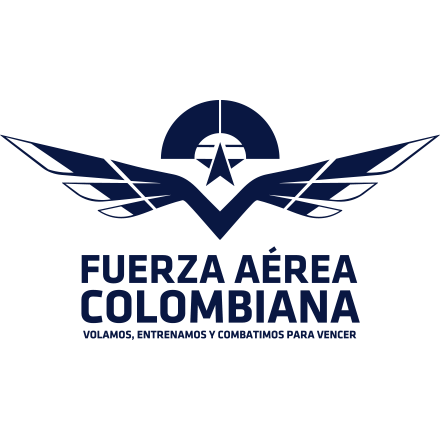
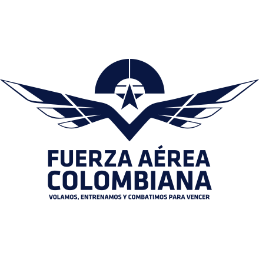
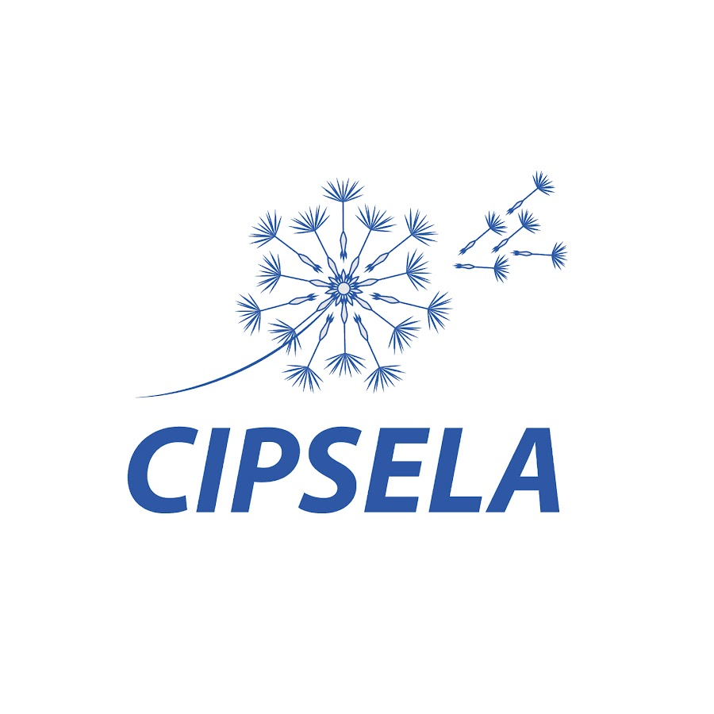
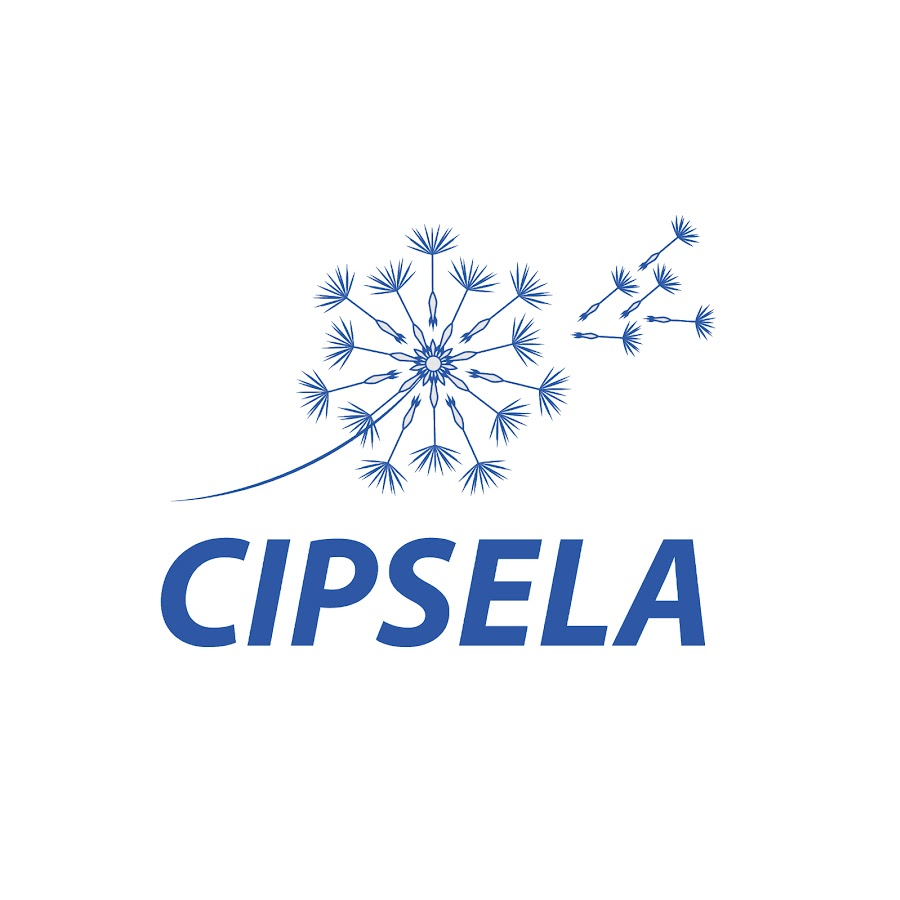

PROGRAMACIÓN
8:10 a.m. - 9:40 a.m.
Intercambio de experiencias Colombia - India en el uso de tecnologías de observación de la tierra.
Jean Rogelio Linero Cueto - Director de Generación de Conocimiento Minciencias
Susan Benavides - Directora Investigación y Prospectiva IGAC
Alexander Páez - Director de investigación IGAC
 


 
